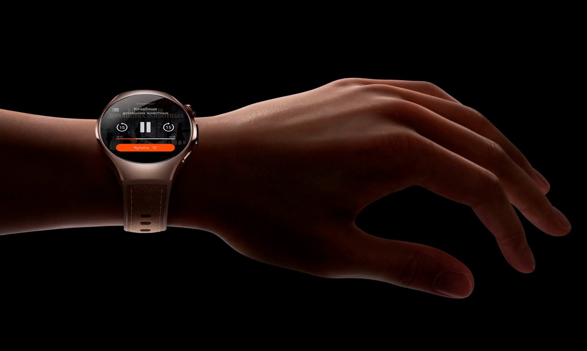
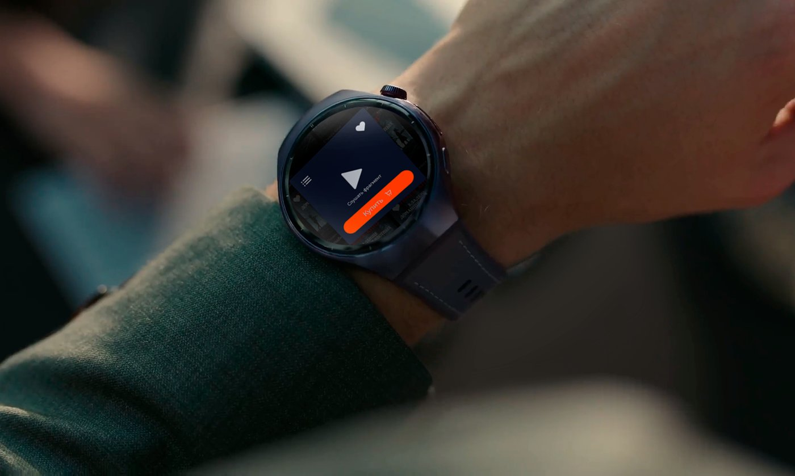
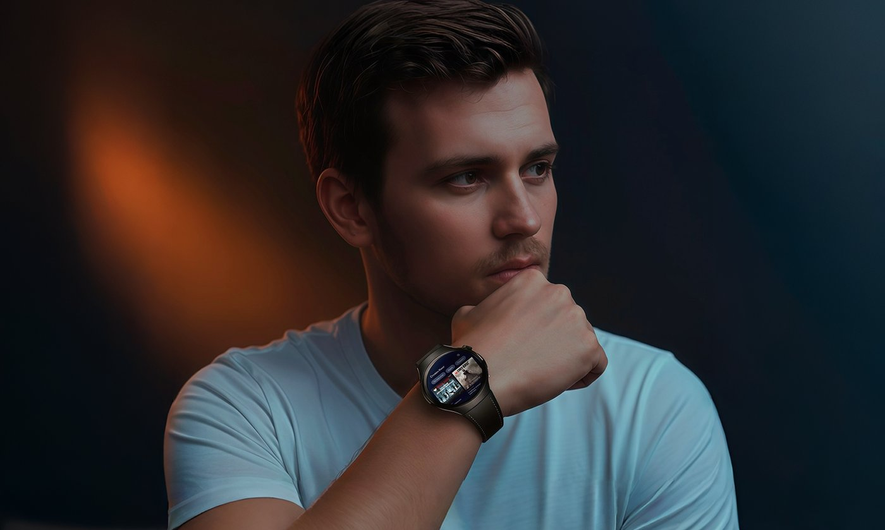
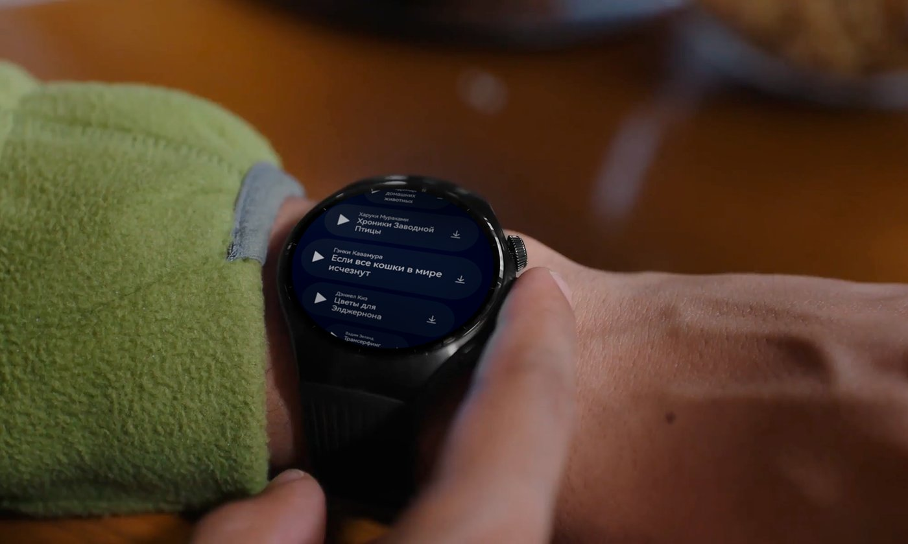
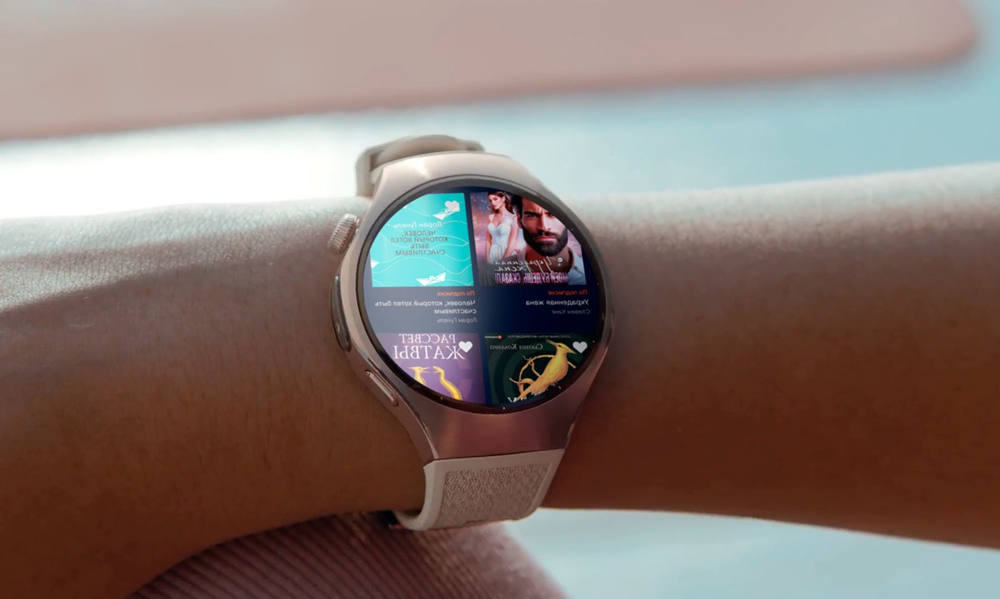
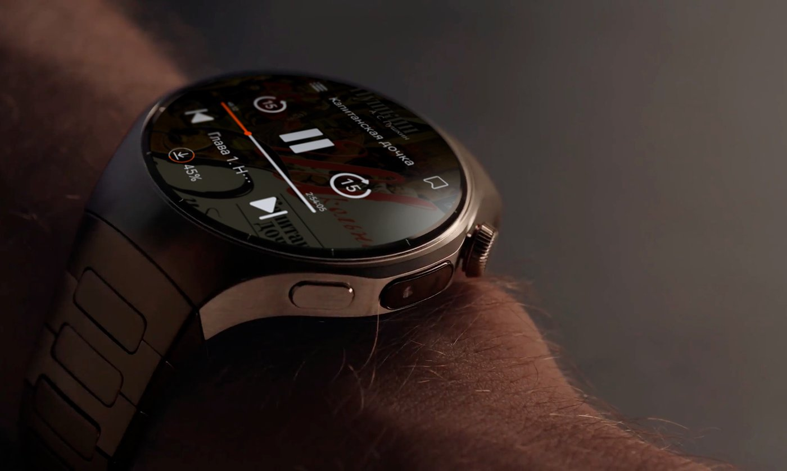

Литрес для
умных часов
Первое приложение Литрес — крупнейшего сервиса электронных и аудиокниг в России и странах СНГ — на базе новой операционной системы смарт-часов, ранее не встречавшейся на российском рынке. Задача: дать пользователям покупать, скачивать и слушать аудиокниги прямо с запястья, даже без интернета.
Смотреть оригинальный кейс →Контекст проекта
Клиент — Литрес, крупнейший сервис электронных и аудиокниг в России и странах СНГ. Нужно было создать первое приложение сервиса для новой закрытой операционной системы на смарт-часах пятого поколения от ведущего мирового бренда, сохранив ключевую функциональность и удобство для пользователя.
Готовой документации по платформе почти не было — только на английском и китайском языках, а сама операционная система была новой для российского и европейского рынка.
Совсем новая платформа без готовых решений
Экосистема приложений для новой ОС только формировалась, а документация существовала лишь на английском и китайском языках. Компактный круглый дисплей 1,8 дюйма с ограничением по памяти и требование стабильной работы плеера даже офлайн — всё это нужно было учесть, не имея аналогичных паттернов и примеров.
Перенести ключевой функционал на запястье
Разработать приложение с нуля на новой ОС: покупку, скачивание и прослушивание аудиокниг и подкастов, макеты под круглый дисплей 466×466 px с ограниченными жестами, работу без интернета, максимально простое управление, синхронизацию с основным приложением Литрес и упрощённую оплату.
Как решали задачу
- 01
Аналитика и сценарии
Изучили поведение аудитории Литрес и выделили три основных сценария использования на часах: в дороге, во время тренировки и спонтанные покупки или прослушивание. На них и строился дальнейший дизайн.
- 02
Погружение в платформу
Разобрали англо- и китаеязычную документацию по новой ОС, экспериментировали с адаптацией UI-решений и собирали весь функционал с нуля из компонентов платформы — часто методом проб и ошибок.
- 03
UI под круглый экран
Спроектировали ключевые элементы для удобства использования в движении, продумали иерархию информации — названия, переключение глав, статус загрузки, навигацию — и интуитивное управление жестами.
- 04
Тестирование и отладка
Проверяли и дорабатывали приложение итеративно, добиваясь стабильной работы плеера офлайн и плавной синхронизации с основным приложением Литрес.
Как это выглядит






«Приложение получилось быстрым и понятным даже на маленьком экране — команда уложилась в срок, несмотря на полное отсутствие готовых паттернов под новую платформу.»— Команда Литрес
Что получилось в результате
Приложение открыло сервису новую пользовательскую экосистему, ранее не знакомую с Литрес на носимых устройствах, увеличило число спонтанных покупок за счёт доступности и позволило слушать книги офлайн — в поездках и на тренировках.